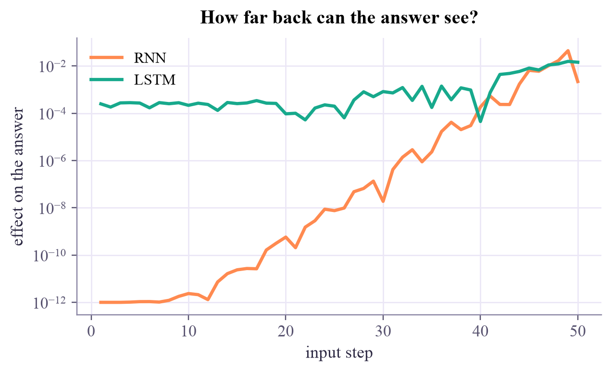

step 0: input +1 -> memory [0.762 0. ] step 1: input +0 -> memory [0.595 0.363] step 2: input +0 -> memory [0.49 0.446] step 3: input +0 -> memory [0.414 0.436] step 4: input -1 -> memory [-0.556 0.401] step 5: input +0 -> memory [-0.463 -0.077] step 6: input +0 -> memory [-0.394 -0.264]
Machine Learning
 about 10 min
about 10 min ml-w9d4.ipynb
ml-w9d4.ipynb
Recurrent networks: memory for sequences
Sentences, sounds and sensor readings arrive one step at a time. A recurrent network reads them in order and carries a memory along; gates decide how long that memory lasts.
In this lesson you will
- Run a recurrent network by hand: the same weights at every step, and a hidden state carried along
- Explain vanishing gradients, and why plain RNNs forget
- Explain how the LSTM's gates protect its memory, and train both in PyTorch
Warm-up
1 minReading one word at a time

"The keys to the lab, which Sara left on the desk next to the printer, are…" To get "are" right, you had to remember "keys" for a dozen words. Every network so far took its whole input at once, with a fixed size. Sequences come one step at a time, at any length. They need a network with a memory.
Big idea
4 minA loop with a memory
A recurrent neural network keeps a hidden state , a vector that summarizes everything read so far. At each step it mixes the old state with the new input, using the same weights every time:
After the last step, goes into an ordinary output layer. Drawn step by step ("unrolled"), it's a very deep network whose layers all share one set of weights, so backpropagation works as usual; it's called backpropagation through time.
The trouble is in that depth. For the answer to depend on step 1, the gradient must flow back through every step, and each step multiplies it by and by the slope of tanh. Multiply many numbers below 1 and the product shrinks exponentially: vanishing gradients. Above 1, it blows up: exploding gradients. In practice, a plain RNN learns from the last ten or twenty steps and forgets the rest.
The LSTM (long short-term memory, Hochreiter and Schmidhuber, 1997) adds a separate memory cell that is updated mostly by addition, guarded by gates: numbers between 0 and 1, computed from the input and the state, that act like valves.
- The forget gate decides how much of the old memory to keep: .
- The input gate decides how much of the new candidate to write.
- The output gate decides how much of the memory to show as .
With the forget gate near 1, the memory and its gradient pass through a step almost unchanged, so information can travel a long way. The GRU (2014) is a slimmer version with two gates.
A recurrent network reads a sequence step by step with shared weights and a memory; plain memories fade because gradients vanish, and the LSTM's gates keep them alive.
Play
3 minWatch a memory fade
One plain recurrent neuron (orange) against a gated memory cell (green), on the same inputs. The numbers at the bottom say how much step 1 still matters at step 30: the gradient that learning from step 1 would need.
Try this
With one pulse at step 1, slide w from 0.5 to 1.5. Below 1, the memory fades; above 1, it saturates at ±1 and the step-1 effect still vanishes (tanh is flat there). Now set the forget gate to 1.00: the memory holds perfectly. Add a −1 pulse at step 15: can the gated cell still tell that step 1 was positive? Turn on random inputs and watch both memories drift. (A real LSTM also has an input gate to shut out unimportant inputs.)
Code
2 minRNNs in code
The notebook for this lessonEvery code cell below, with what it printed, is in
ml-w9d4.ipynb. To change the code and run it yourself, open the notebook in Google Colab (free, in your browser) or download it for your own Jupyter.import time
import numpy as np
import matplotlib.pyplot as plt
import torch
import torch.nn as nn
torch.set_num_threads(1)
W = np.array([[0.9, 0.0], [0.5, 0.5]]) # memory -> memory
U = np.array([[1.0], [0.0]]) # input -> memory
xs = [1.0, 0.0, 0.0, 0.0, -1.0, 0.0, 0.0] # a short sequence
h = np.zeros(2)
for t, x in enumerate(xs):
h = np.tanh(W @ h + U @ [x])
print(f"step {t}: input {x:+.0f} -> memory {np.round(h, 3)}")What it printed in the notebook
class Reader(nn.Module):
def __init__(self, kind, hidden=16):
super().__init__()
torch.manual_seed(0)
self.rnn = (nn.RNN if kind == "RNN" else nn.LSTM)(1, hidden, batch_first=True)
self.out = nn.Linear(hidden, 2)
if kind == "LSTM":
with torch.no_grad(): # the gates are stacked as input, forget, cell, output
self.rnn.bias_ih_l0[hidden:2 * hidden].fill_(1.0)
self.rnn.bias_hh_l0[hidden:2 * hidden].fill_(1.0)
def forward(self, x): # x: (batch, T, 1)
states, _ = self.rnn(x) # the memory after every step: (batch, T, hidden)
return self.out(states[:, -1]) # answer from the last one
def sequences(n, T, gen):
x = torch.randn(n, T, 1, generator=gen)
return x, (x[:, 0, 0] > 0).long()
def train_and_test(kind, T, steps=1500):
model = Reader(kind)
opt = torch.optim.Adam(model.parameters(), lr=3e-3)
loss_fn = nn.CrossEntropyLoss()
gen = torch.Generator().manual_seed(0)
for _ in range(steps):
x, y = sequences(64, T, gen)
opt.zero_grad()
loss_fn(model(x), y).backward()
opt.step()
x, y = sequences(2000, T, torch.Generator().manual_seed(1))
with torch.no_grad():
return (model(x).argmax(dim=1) == y).float().mean().item()
t0 = time.perf_counter()
print(f"{'length T':>9s} {'RNN':>7s} {'LSTM':>7s}")
for T in [5, 20, 50]:
print(f"{T:9d} {train_and_test('RNN', T):7.3f} {train_and_test('LSTM', T):7.3f}")
print(f"({time.perf_counter() - t0:.0f} s; 0.5 = guessing)")What it printed in the notebook
length T RNN LSTM
5 0.997 0.996
20 0.502 0.987
50 0.501 0.791
(11 s; 0.5 = guessing)Both remember 5 steps back. At 20 steps, the plain RNN is guessing while the LSTM is at 99%. At 50, even the LSTM struggles: tomorrow's idea removes the long chain altogether.
x = torch.randn(1, 50, 1, generator=torch.Generator().manual_seed(2), requires_grad=True)
plt.figure(figsize=(6.4, 3.4))
for kind, color in [("RNN", "#ff8a50"), ("LSTM", "#17a98c")]:
x.grad = None
Reader(kind)(x)[0, 1].backward()
plt.semilogy(range(1, 51), x.grad[0, :, 0].abs().numpy() + 1e-12, color=color, label=kind)
plt.xlabel("input step")
plt.ylabel("effect on the answer")
plt.legend()
plt.title("How far back can the answer see?")
plt.show()What it printed in the notebook

Your turn
optionalYour turn: where does the plain RNN give up?
Train the plain RNN on lengths between 8 and 20. Where does its memory run out?
for T in [8, 10, 12, 15, 20]:
acc = None # TODO: train_and_test("RNN", T)
print(f"T = {T:2d}: {acc}")Need a hint?
Everything is ready: train_and_test("RNN", T) trains a fresh model and returns its test accuracy. Each call takes a second or two.
Show a solution
for T in [8, 10, 12, 15, 20]:
print(f"T = {T:2d}: {train_and_test('RNN', T):.3f}")
print("It still remembers 15 steps back, but not 20: somewhere in between, the gradient from the answer")
print("back to step 1 becomes too small to learn from. The LSTM above managed 20 easily.")What it printed in the notebook
T = 8: 0.993 T = 10: 0.990 T = 12: 0.988 T = 15: 0.968 T = 20: 0.502 It still remembers 15 steps back, but not 20: somewhere in between, the gradient from the answer back to step 1 becomes too small to learn from. The LSTM above managed 20 easily.
Check yourself
1 minQuick check
Question 1 of 3
What does an RNN's hidden state hold?
Question 2 of 3
Why do plain RNNs struggle to learn long-range memory?
Question 3 of 3
In an LSTM, what happens when the forget gate is close to 1?
Wrap-up
1 minToday in one sentence
Quantum link
A quantum computer is itself a kind of recurrent machine: a state carried from step to step by the same kind of operations. Quantum recurrent networks and quantum reservoir computing use a qubit register as the memory and feed a time series in step by step; noise then plays the role of the forget gate, whether you want it or not.
Go deeper (optional)
ISLP section 10.5 (recurrent neural networks, with a document-classification and a time-series example). Christopher Olah's blog post "Understanding LSTM networks" (2015) has the clearest diagrams of the gates. The originals: Hochreiter and Schmidhuber, "Long short-term memory" (Neural Computation, 1997), and Bengio, Simard and Frasconi (1994) on vanishing gradients.
Tomorrow, the last lesson: attention, which lets every step look straight at every other step, and the transformer built from it.

That's the lesson!
Tap the button to save it. Short and steady wins.
Marked by mistake? Undo